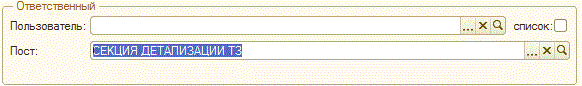
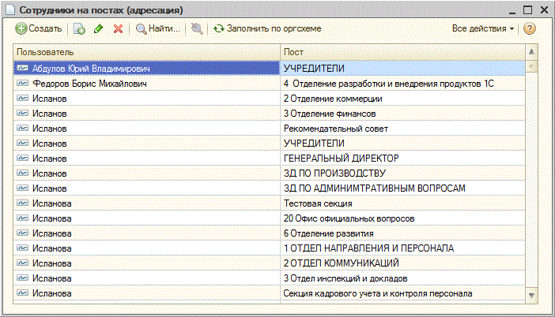

Рис.3 Указание пользователя в задаче.
Чтобы поставить задачу списку пользователей необходимо нажать на кнопку "Список пользователей" рядом с полем «Пользователь» , в открывшемся списке указать пользователей задачи и нажать "Готово" (Рис. 4).

Рис.4 Указание списка пользователей в задаче.
Если задача создаётся для группы пользователей, то она отправляется каждому пользователю, как отдельная задача, которую нужно выполнить каждому сотруднику в списке исполнителей по отдельности.
Пост. Выбирается пост организации из справоника "Оргсхема", на который ставится задача (Рис. 5).

Рис.5 Создание задачи на пост организации.
В соответствии с «Адресацией задач коммцентра» поставленная задача отображается у пользователей поста (Рис. 6).

Рис.6 Адресация задач коммцентра.
Вкладка «Файлы»
Вкладка содержит файлы по задаче, можно добавлять, открывать, сохранять файлы по задаче .